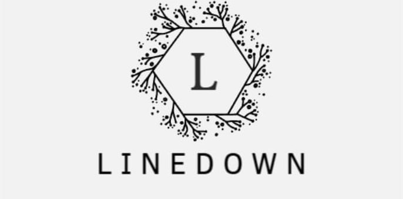

О бренде linedown

Данный бренд имеет подборки различной одежды для мужской и женской части населения. В продаже имеются сезонные и межсезонные виды одежды и аксессуаров.
Для быстрого поиска конкретных вещей можно воспользоваться поиском, который в шапке данного сайта.
Также на сайте имеется корзина, в которую можно добавлять понравившиеся вещи, чтобы при покупке мгновенно получить информацию о выбранных одеждах и аксессуарах. Однако, имейте ввиду, неавторизованные пользователи после перезахода на сайт теряют выбранные вещи с корзины.